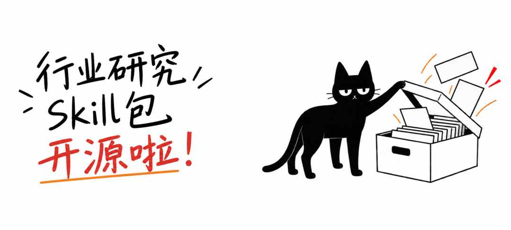
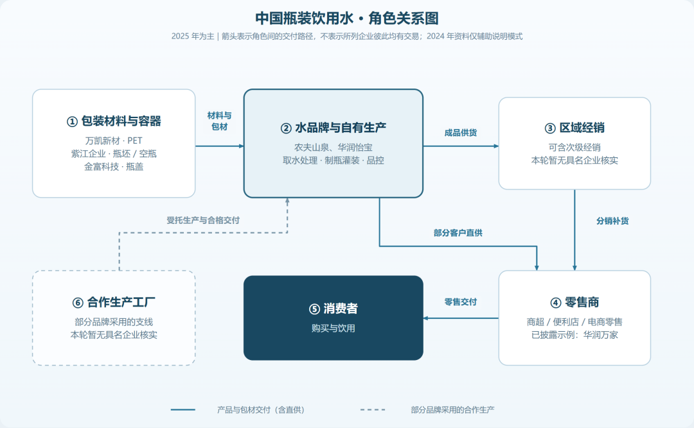
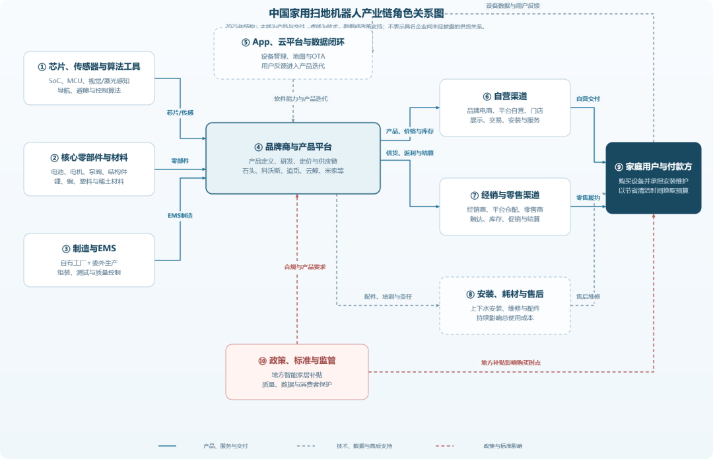

这是一个沉迷AI的十年行研与用研老兵的自我蒸馏。
我把自己反复使用的研究流程和判断规则，整理成了一个Skill仓库「盒盒行研技能包」——一共 1 个总路由入口、13 个专项 Skill。总路由负责开题、组织资料、调度专项和验收成果；产业链、市场规模、竞争格局、商业模式等13个专项Skill也可以单独使用。
做行研的都知道，资深从业者或研究员对一个行业长期积累的深层 know-how 、市场敏感度、关键研判和交付责任，其实是没有任何方法论或工具层应用可以替代的。
所以，这个Skill技能包的定位是行业分析小助理，帮你把一般行研中部分方法型和流程型步骤变成明确的工作要求，加快信息搜索与加工效率，拉高分析角度、维度、深度与颗粒度的下限水平。在资料相对充足可查的前提，可以更快拿到一份相对专业、结构规范、证据可追溯、有参考价值的分析初稿。
盒盒行研技能包的 Skill 清单
仓库包含 1 个总入口和 13 个专项。每个专项都会形成一份独立的 Markdown 报告；部分专项会根据课题额外交付excel模型、html/svg图表等附件。
hehe-industry-researcher | |||
hehe-market-sizing | |||
hehe-industry-chain-map | |||
hehe-business-model | |||
hehe-competitive-landscape | |||
hehe-pest-analysis | |||
hehe-trend-analysis | |||
hehe-industry-drivers | |||
hehe-industry-pain-points | |||
hehe-company-profile | |||
hehe-financial-analysis | |||
hehe-governance-capital-allocation | |||
hehe-valuation-analysis | |||
hehe-investment-logic |
这一篇先介绍产业链专项Skill hehe-industry-chain-map。需要做产业链研究时，可以直接调用这个 Skill；做完整研究时，也可以交给总入口按课题调用。
分清功能、角色和企业
这个 Skill 里把产业链拆成三层，先拆功能、再找角色、最后落到企业。
- 功能链：梳理产业链条上下游各个环节。比如瓶装水，要有瓶子的生产、水处理、灌装、运输和销售。
- 角色链：梳理各个环节有哪些角色。比如包装供应商提供瓶子，品牌自有工厂或代工厂负责灌装，经销商或零售商把水卖给消费者；还要查谁向谁采购、付款，出了问题谁负责。
- 企业图谱：梳理各个环节有证据支持的真实公司。
追踪订单、资金、数据和责任四大脉络
只沿着产品交付路径画箭头，容易漏掉产业链里真正影响生意的关系：使用者未必付款，签约者未必交付，拿到终端数据的人也未必直接收费。这个Skill 会在交付路径上另查四条线：
- 订单流：探索谁提出需求、选型和签约。
- 资金流：探索谁付款、谁垫资、谁承担账期。
- 数据流：探索谁能采集、访问和使用关键数据。
- 责任流：探索交付、质量、库存、售后和合规责任落在谁身上。
关键瓶颈及其替代方案
这个 Skill 还会在资料允许的范围内分析关键瓶颈及其替代方案。
它先看哪些问题会拖慢生产或交付，例如关键材料短缺、扩产速度跟不上需求、客户认证周期过长，再用交期、产能和认证进度等证据核查。确认瓶颈后，才比较换供应商、换技术、改流程或自己生产等办法：能否真正替代、要多久、花多少钱、会带来什么新问题。
交付物
Markdown 文本报告一份。 可修改的 Mermaid 图源和 SVG 图、离线 HTML，方便复核与展示。
产业链交付图例
瓶装饮用水。主线是包装供应—品牌与生产—经销—零售—消费者，旁边再补品牌直供零售和合作工厂受托生产两条实际路径。

家用扫地机器人。芯片、零部件和制造汇入品牌商，再经自营或经销渠道到达用户；另一组线追踪 App 数据反馈、安装维修和售后责任。

安装推荐
产业链 Skill hehe-industry-chain-map 可以独立下载安装。也可以14个skill整组下载，由hehe-industry-researcher 这个总路由综合调度。
另外虽然流程不受影响，但行业研究是一个非常吃材料质量的工作，材料的丰富度、准确性、代表性、即时性和专业性，关乎着最终结果是无限接近“行业真相”还是“材料立场”。所以，非常推荐同时安装两个搜索和审核资料的辅助性skill：
探子：一个帮你搜索信息的skill。https://github.com/hexiaofeier/tanzi
保洁：一个帮你清洗数据的Skill。https://github.com/hexiaofeier/baojie
我是盒小啡，一个沉迷 Agent 的行研分析师，刚刚开源了“盒盒行业研究技能包”，我会继续把这些藏在报告背后的行研方法一点点分享，持续升级和进化。
希望这位“盒盒行业分析小助理”能帮上你，请帮点个star哟！
点击下方阅读原文去GitHub上下载。如果打不开/用不了Github来私信我。